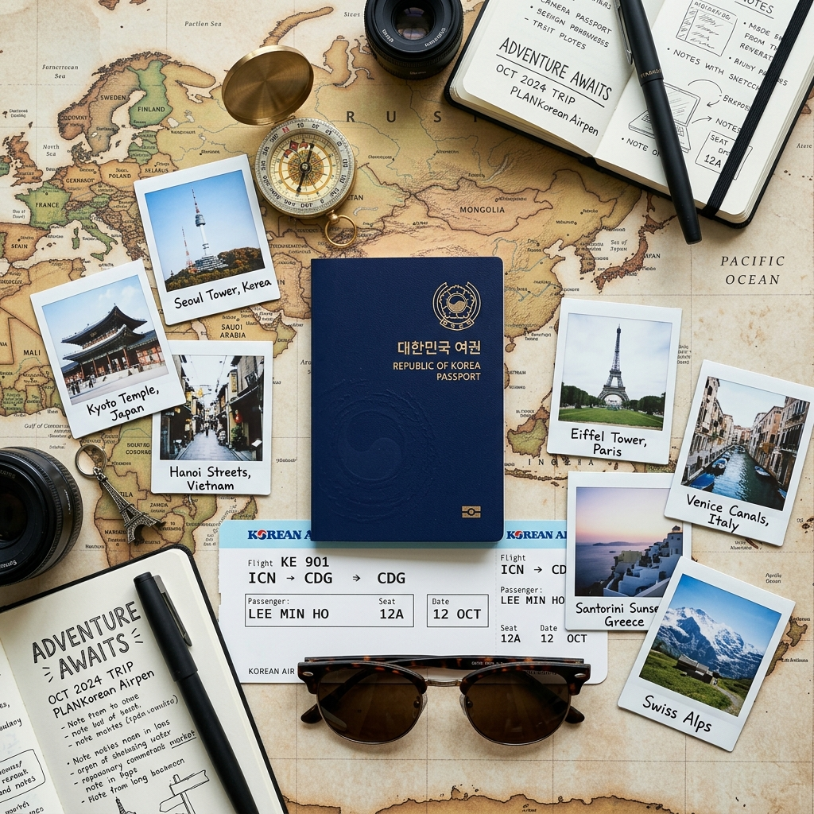
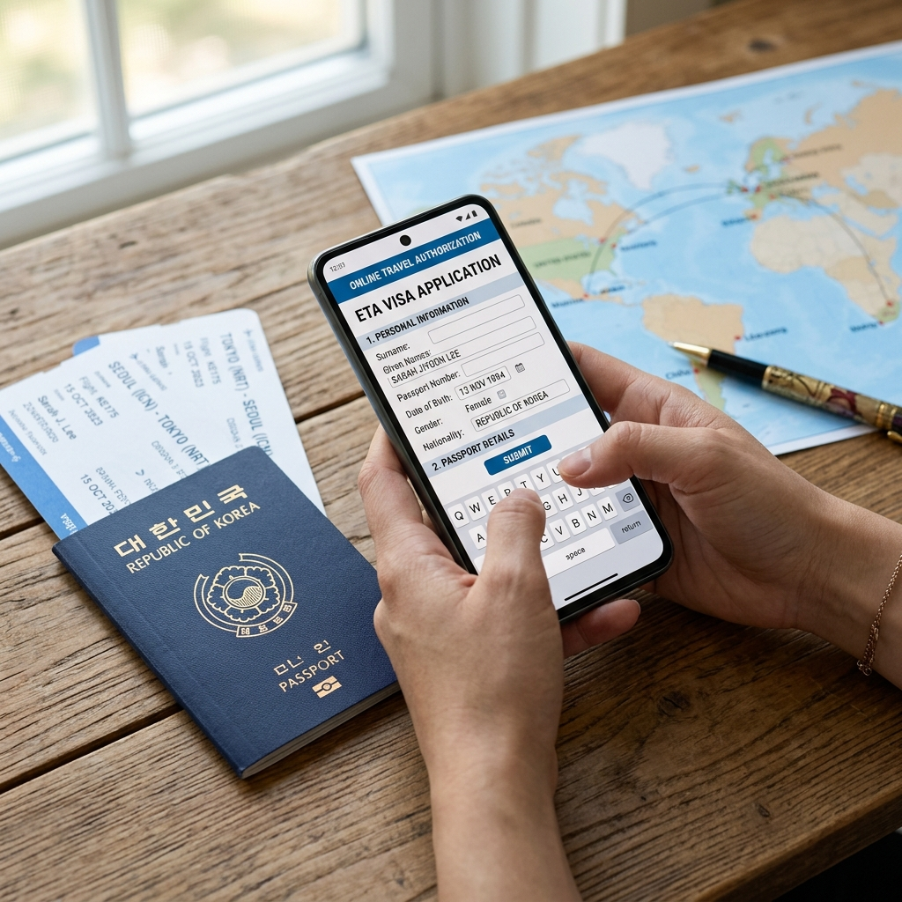

대한민국 여권(Republic of Korea Passport)은 전 세계 여권 파워 순위에서 지속적으로 상위권을 유지하고 있습니다. 비자 없이 또는 도착 비자(VoA)만으로 입국 가능한 국가가 190개국 이상에 달해 세계 최강 수준의 여행 자유도를 갖추고 있습니다.
이는 한국 정부가 체결한 비자 면제 협정과 외교 관계의 결과물입니다. 다만 같은 나라라도 입국 목적(관광/취업/유학)에 따라 비자 요건이 달라질 수 있으므로, 이 글에서 다루는 무비자 정보는 단기 관광 목적에 한정합니다.
| 국가 | 체류 가능 기간 | 비고 |
|---|---|---|
| 일본 | 90일 | 무비자 단기 관광 |
| 대만 | 90일 | 비자 면제 적용 |
| 태국 | 60일 | 2024년 이후 30일→60일 확대 |
| 베트남 | 45일 | 2023년 이후 15일→45일 확대 |
| 말레이시아 | 90일 | 비자 불필요 |
| 싱가포르 | 30일 | ICA 온라인 신고 불필요 |
| 필리핀 | 30일 (연장 가능) | eTravel 사전 등록 필요 |
| 인도네시아 | 30일 | 발리 등 무비자, 일부 공항 도착비자 |
※ 체류기간·입국 요건은 각국 이민 당국 정책에 따라 수시로 변동됩니다. 출발 전 외교부 해외안전여행 사이트(0404.go.kr)에서 최신 정보를 재확인하세요.

유럽 (솅겐 협약국)
프랑스, 독일, 이탈리아, 스페인 등 유럽 솅겐 지역 국가는 180일 중 최대 90일 체류 가능합니다. 솅겐 협약 가입국 전체가 하나의 구역으로 취급되므로, A국에서 체류한 날수가 B국에서의 체류 가능 기간에 합산됩니다.
ETIAS 도입 예정
2025년 이후 유럽 솅겐 지역은 ETIAS(유럽 여행 정보 및 허가 시스템) 사전 신청이 의무화될 예정입니다. 무비자 자체가 폐지되는 것이 아니라 온라인으로 간단한 사전 허가를 받는 절차가 추가되는 것입니다. 정확한 시행 일자와 절차는 유럽연합(EC) 공식 발표를 확인하시기 바랍니다.
미국
한국은 비자면제프로그램(VWP) 가입국입니다. 미국 입국 최대 90일 체류 가능하며, 출발 72시간 전 ESTA(전자여행허가시스템) 온라인 신청이 필수입니다. ESTA 비용은 21달러이며, 유효기간은 2년입니다. ESTA는 비자가 아니라 허가이므로, 공항 입국 심사관의 최종 결정에 따라 입국이 거절될 수 있다는 점을 알아두세요.
캐나다
ETA(전자여행허가서) 사전 신청이 필요합니다. 최대 6개월 체류 가능하며, ETA 비용은 7캐나다달러입니다. 미국 비자 소지자는 ETA 없이도 캐나다 입국이 가능합니다.
"여권 잔여기간이 6개월 이상 남아야 한다"는 규칙은 많은 분들이 들어봤지만 정확한 의미를 모르는 경우가 많습니다.
이 규칙의 원칙은 입국일 기준으로 여권 잔여 유효기간이 최소 6개월 이상 남아있어야 입국을 허용한다는 것입니다. 다만 이 규정의 실제 적용 여부는 국가별로 다릅니다.
| 구분 | 여권 잔여기간 요건 | 대표 국가 |
|---|---|---|
| 6개월 이상 필요 | 엄격 적용 | 말레이시아, 인도네시아, 태국 등 |
| 3개월 이상 필요 | 솅겐 규정 기준 | 대부분 유럽 솅겐 국가 |
| 체류기간 이상만 필요 | 상대적으로 유연 | 일부 국가 |
실수를 줄이려면 해외여행 전 여권 만료일을 먼저 확인하고, 잔여기간이 6개월 미만이면 출발 전에 여권을 갱신하는 것이 안전합니다.
여권은 읍·면·동 행정복지센터, 여권사무대행기관, 재외공관에서 발급·갱신할 수 있습니다. 정부24(gov.kr) 온라인 서비스를 통한 신청도 가능하나, 최초 발급과 훼손·분실 여권 갱신은 반드시 직접 방문이 필요합니다.
성인 기준 10년짜리 일반 여권 발급 수수료는 53,000원(58면 기준)입니다. 수령까지 보통 5~7 영업일이 소요되며, 성수기(여름·명절 전)에는 10~14일까지 늘어날 수 있습니다.
긴급 여권 발급 서비스도 있으나 추가 비용이 발생합니다. 여유 있게 출발 한 달 전에는 여권 상태를 확인하는 것을 권장합니다.
중국: 정책이 자주 바뀌며, 무비자 협정 체결 여부가 수시로 변동됩니다. 방문 전 반드시 주한중국대사관 공식 홈페이지를 확인하세요.
인도: e-Visa(전자 비자) 사전 신청이 필요합니다. 도착 72시간 전 온라인으로 신청하며 비용은 약 25~100달러입니다.
러시아: 한러 비자 면제 협정이 존재하나 현재 정치·외교적 상황에 따라 실제 입국 가능 여부를 별도로 확인해야 합니다.
이란·이라크·예멘: 특별여행주의보·여행금지 지역이 포함되어 있으므로 외교부 해외안전여행 사이트에서 안전 등급을 꼭 확인하세요.
① 여권 만료일 확인 — 목적지 요건보다 충분한 여유가 있는지
② 외교부 해외안전여행 사이트(0404.go.kr) — 목적지 여행 경보 등급 확인
③ ESTA·ETA·ETIAS 등 사전 전자 허가 — 출발 최소 72시간 전
④ 항공권 왕복 예약 확인서 — 일부 국가 입국 시 제출 요구
⑤ 여행자 보험 가입 — 무비자 여행에서도 보험은 선택이 아닌 필수
⑥ 현지 입국 신고서 요건 — 일부 국가는 종이 신고서나 앱 등록 필요

왕복 항공권을 증빙으로 준비하세요
무비자 입국 시 현지 출입국 심사에서 귀국 항공권 제시를 요구하는 경우가 있습니다. 스마트폰에 항공권 예약 확인서를 저장해 두거나 인쇄본을 지참하세요.
체류 기간을 엄수하세요
무비자 허용 기간을 하루라도 초과하면 과태료, 강제 출국, 향후 입국 금지 등 심각한 불이익이 발생할 수 있습니다. 체류 일수를 정확히 계산하고 넉넉한 여유를 두세요.
복수 입국 규정도 확인하세요
일부 국가는 짧은 기간 내 재입국을 제한합니다. 동일 국가를 출국 후 수일 내 재입국할 계획이라면 해당 국가의 복수 입국 규정을 별도로 확인하세요.
무비자 협정과 입국 요건은 외교·정치 상황에 따라 수시로 변동됩니다. 블로그나 유튜브 정보는 작성 시점 이후 변경을 반영하지 못하는 경우가 많습니다.
공식 확인 채널:
• 외교부 해외안전여행 사이트: 0404.go.kr
• 외교부 영사 콜센터: 02-3210-0404 (24시간)
• 목적지 국가 주한 대사관 공식 홈페이지
• 한국 주재 항공사 고객센터 (항공사도 최신 입국 요건 정보를 보유하고 있습니다)